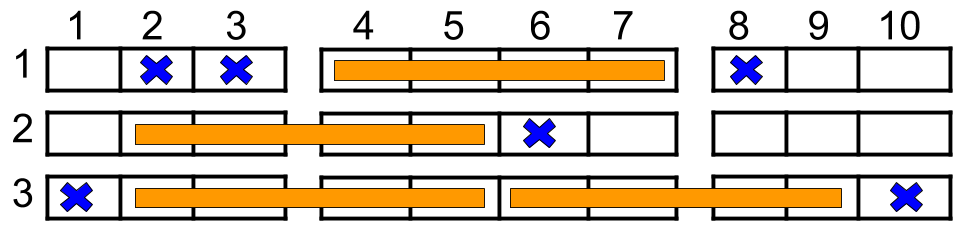

1386. 安排电影院座位
只统计出现过的行：每行 10 座压成位掩码，三个四人窗口 (2~5)(4~7)(6~9) 按占用情况计 0/1/2 户，空行直接 ×2。
思路
n高达10^9，逐行开数组必炸；实际只有出现过的行会被预订破坏，用哈希表把每行压成 10 位掩码。- 左块
2~5和右块6~9座位不相交，两边都空 = 放 2 户；否则中块或任一侧空 = 放 1 户，全占 = 0。 - 没出现过的行整行空，每行贡献 2 户，
ans = 2×(n − 出现行数) + Σ出现行的贡献。 - 每行的贡献只取决于掩码，无需真的安排座位顺序。
图解
最优解
1import java.util.*;2 3class Solution {4 public int maxNumberOfFamilies(int n, int[][] reservedSeats) {5 Map<Integer, Integer> masks = new HashMap<>(); // 行号 -> 该行被占座位的位掩码6 for (int[] r : reservedSeats) {7 masks.merge(r[0], 1 << r[1], (a, b) -> a | b);8 }9 long ans = 2L * (n - masks.size()); // 没出现过的行整行空，左右两块各坐一户10 for (int mask : masks.values()) { // 只逐个判断出现过的行11 int left = 0b111100, mid = 0b11110000, right = 0b1111000000; // 2~5、4~7、6~9 列12 if ((mask & left) == 0 && (mask & right) == 0) ans += 2; // 两边都空：放两户13 else if ((mask & mid) == 0 || (mask & left) == 0 || (mask & right) == 0) ans += 1;14 }15 return (int) ans;16 }17}题目
如上图所示，电影院的观影厅中有 n 行座位，行编号从 1 到 n ，且每一行内总共有 10 个座位，列编号从 1 到 10 。
给定一个二维数组 reservedSeats ，其中 reservedSeats[i] = [rowi, seati] 表示第 rowi 行的座位 seati 已经被预定。
四人小组必须被安排在同一排的四个座位上。该小组可以坐在以下座位块之一：
- 座位
2, 3, 4, 5 - 座位
4, 5, 6, 7 - 座位
6, 7, 8, 9
只有当该块中的所有座位都 没有 被预订时，才能使用该块。每个座位 最多 只能分配给一个小组。
返回一个整数，表示可以分配的 最大 四人小组数量。
示例 1：

输入：n = 3, reservedSeats = [[1,2],[1,3],[1,8],[2,6],[3,1],[3,10]] 输出：4 解释：上图所示是最优的安排方案，总共可以安排 4 个家庭。蓝色的叉表示被预约的座位，橙色的连续座位表示一个 4 人家庭。
示例 2：
输入：n = 2, reservedSeats = [[2,1],[1,8],[2,6]] 输出：2
示例 3：
输入：n = 4, reservedSeats = [[4,3],[1,4],[4,6],[1,7]] 输出：4
提示：
1 <= n <= 1091 <= reservedSeats.length <= min(10 * n, 104)reservedSeats[i] == [rowi, seati]1 <= rowi <= n1 <= seati <= 10- 所有
reservedSeats[i]都是互不相同的。
题面取自力扣当前版本。
数据快照 2026-11-04。题面版权归力扣所有，本站点仅供本人学习使用，请勿对外发布。